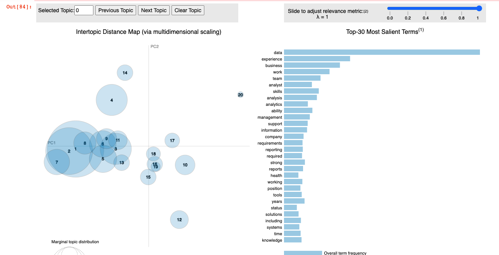

Glassdoor Data Analyst Essential Guide
Check out the app on Streamlit!
- Web scraped 20 pages of Glassdoor using BeautifulSoup and Selenium to obtain 200 interview questions from 146 companies to create a study guide and scraped 1000 data analyst job postings to visualize trends.
- Cleaned and preprocessed data using Pandas and NumPy.
- Analyzed essential data analytics job skills with NLP techniques: Word2Vec, Topic Modeling with LDA, and Rule-Based Matching.
- Explored the data and created visualizations using Seaborn and Matplotlib.
- Developed a Support Vector Regression model to estimate data analyst salaries with a mean absolute error of $12,700.